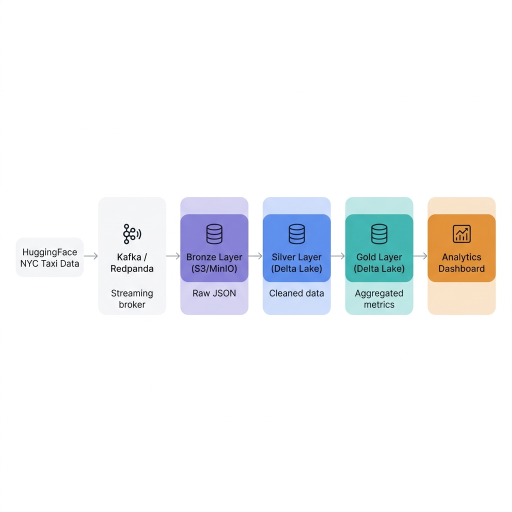

Project Overview
An end-to-end data pipeline implementing a Medallion Architecture (Bronze, Silver, Gold layers) using AWS S3, PySpark, and Delta Lake. The pipeline supports both batch files and live stream ingestion via Kafka (Redpanda) into a containerized local storage (MinIO) or cloud-native AWS S3, orchestrated by Apache Airflow, and visualized through a client-side analytics dashboard.
Architecture

Key Features
- Medallion Lakehouse Pattern: Multi-stage data processing, raw JSON events in Bronze, cleaned schema-enforced Delta Lake tables in Silver, and daily aggregated business metrics in Gold.
- Kafka / Redpanda Event Streaming: Simulates real-time event ingestion. A producer streams JSON ride records to a Kafka topic, and a consumer aggregates them into batch Gzip files for Bronze layer persistence.
- Incremental Streaming Pipeline: PySpark Structured Streaming with checkpoints for incremental updates from Bronze to Silver Delta Lake.
- Containerized Local Stack: Docker Compose configuration with Redpanda, Console UI, and MinIO to simulate an s3 bucket but for zero-cost.
- Airflow Orchestration: A DAG coordinates task execution, managing pipeline dependencies and scheduling.
Pipeline Flow
The data flows through six distinct stages: NYC taxi trip data is downloaded from HuggingFace, streamed through Kafka/Redpanda, persisted as compressed JSONLines in the Bronze layer, cleaned and validated into Silver Delta Lake tables via Structured Streaming, aggregated into Gold-layer metrics (revenue, rides, distance, active drivers), and finally exported to a responsive analytics dashboard.
Airflow DAG Topology
Task dependency graph orchestrated by Airflow:
[ingest_bronze_layer]
│
▼
[process_silver_layer]
│
▼
[compute_gold_aggregations]
│
┌─────┴──────────┐
▼ ▼
[read_gold_metrics] [export_dashboard_data]
Technical Stack
- Engine: PySpark with Delta Lake for lakehouse storage.
- Event Broker: Redpanda / Apache Kafka for real-time event streaming.
- Cloud Storage: AWS S3 or local MinIO (S3-compatible).
- Orchestration: Apache Airflow 2.8+ for DAG-based scheduling and dependency management.
- Containerization: Docker Compose for the full local infrastructure stack.
- Dashboard: HTML/CSS for client-side analytics visualization.